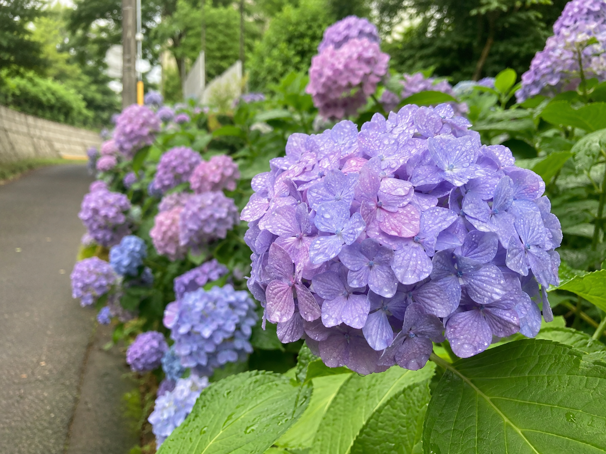
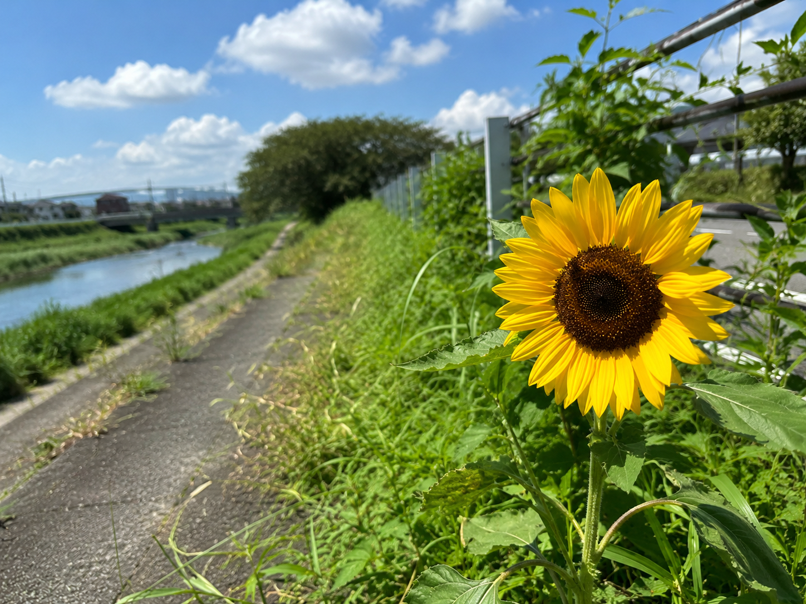
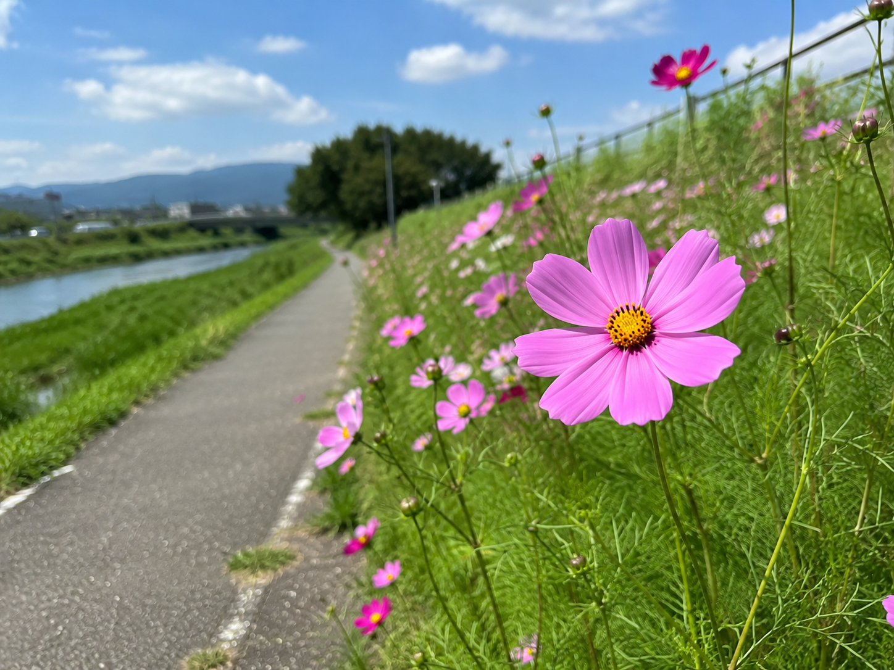

今までに出会った花
目次
あじさい

雨の日に散歩をしているときに見つけたあじさいです。 青や紫の花がとてもきれいで、梅雨ならではの景色を楽しむことができました。
水滴が花びらについていて、とても幻想的な雰囲気だったので写真に残しました。
ひまわり

夏の散歩中に河川敷で見つけたひまわりです。 太陽に向かって大きく咲いている姿がとても印象的でした。
青空との組み合わせがとてもきれいで、 見ているだけで元気をもらえるような景色でした。 夏らしい思い出として写真に残しました。
コスモス

秋の散歩中に見つけたコスモスです。 風に揺れる姿がとても優しく、落ち着いた気持ちになりました。
一面に咲くコスモスを眺めながら歩く時間はとても心地よく、 季節ごとに違った花を見つけられることが散歩の楽しみの一つだと感じました。
出会った花一覧
| 花 | 季節 | 場所 |
|---|---|---|
| あじさい | 梅雨 | 公園 |
| ひまわり | 夏 | 河川敷 |
| コスモス | 秋 | 散歩道 |